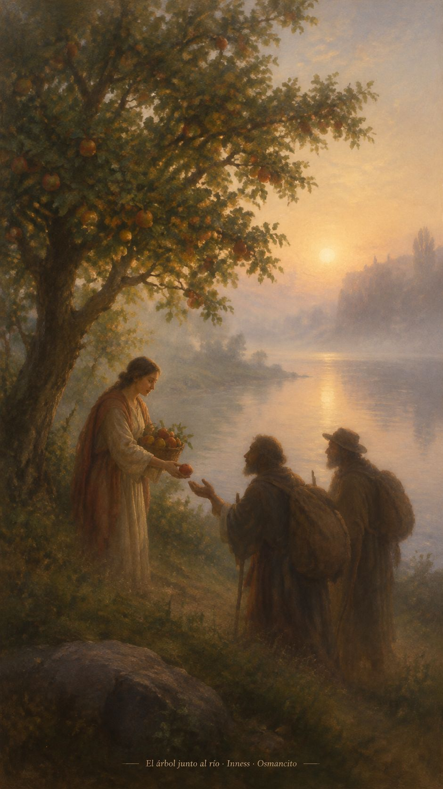
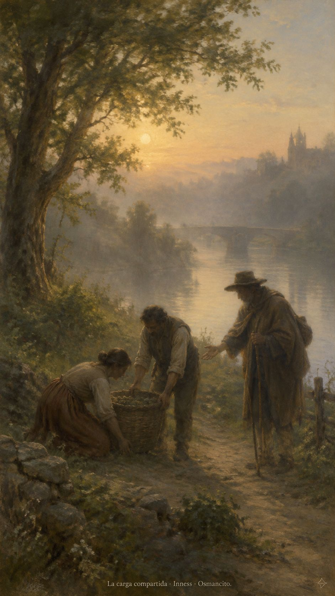
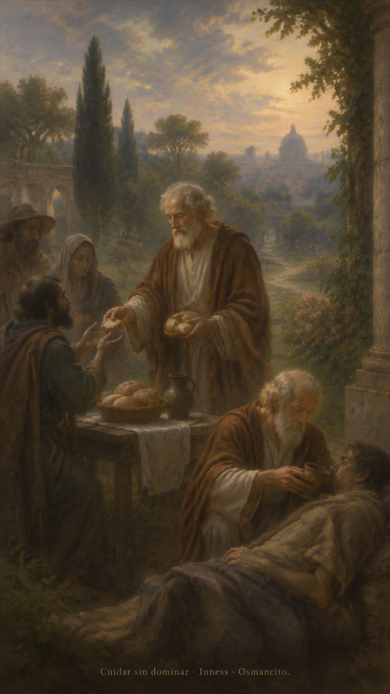

14 de octubre de 2026
¡Buenos días!
El fruto paciente
4
Si tenemos la vida del Espíritu, actuemos conforme a ese mismo Espíritu.
Gálatas 5,25. Fuente
Que echemos raíces junto al agua que nos sostiene y demos fruto sin apurar las estaciones. Que la alegría no tape el dolor ajeno y la paz no sea una puerta cerrada. Que aprendamos a sostener las cargas que otros llevan, antes de añadirles una exigencia. Que la bondad tenga manos, la paciencia tenga tiempo y la justicia encuentre sitio en nuestros gestos. Que hoy dejemos menos peso y más sombra para quien venga detrás.

- El árbol junto al agua recoge el Salmo 1. Sus frutos compartidos remiten a Gálatas 5.

- La cesta sostenida entre varios responde a Lucas 11: las cargas no se alivian con órdenes, sino con ayuda.
¡Feliz miércoles 14 de octubre!
😊🙋♂
San Calixto I, papa y mártir
Que cuidar no sea adueñarnos de nadie. Que recibamos a cada persona como una vida confiada, nunca como una posesión. Que el ejemplo pese más que la orden y la mesa tenga lugar para quienes llegan heridos. En la memoria de Calixto, que la autoridad aprenda a servir y nuestras manos se ofrezcan de buena gana, sin buscar recompensa.

- La escena de servicio recoge 1 Pedro 5 y Lucas 22: cuidar de buena gana, sin dominar.
¡Feliz memoria de san Calixto I!